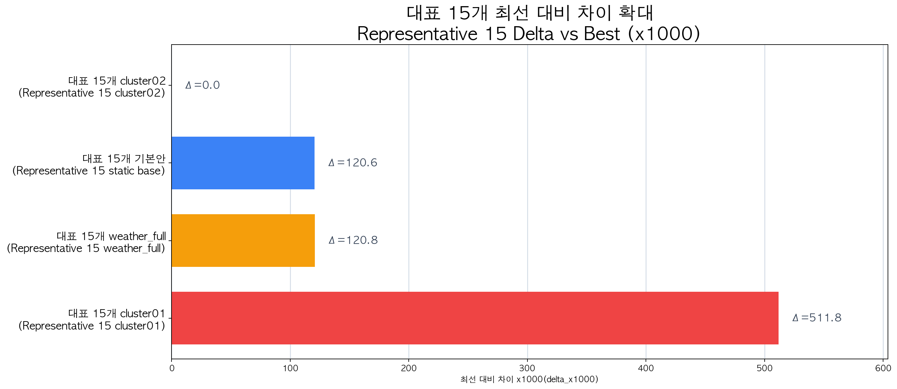
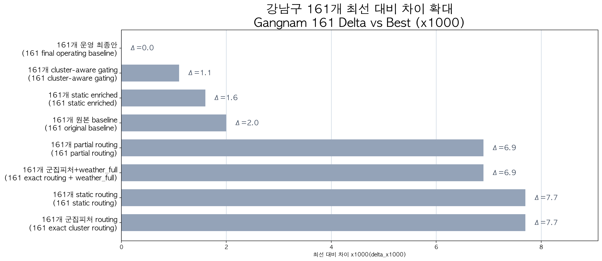
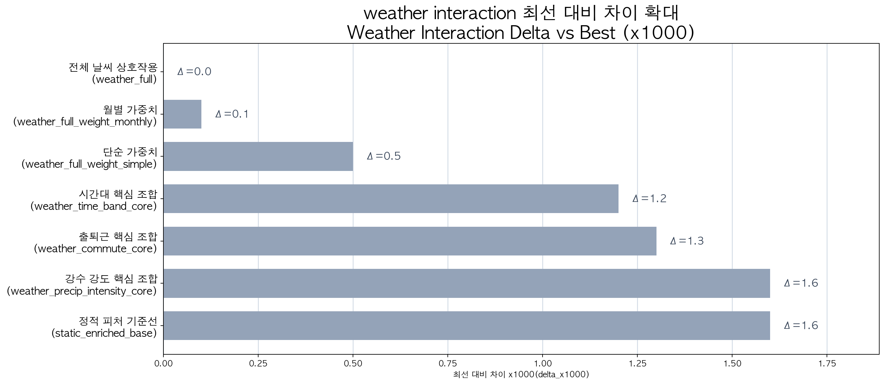
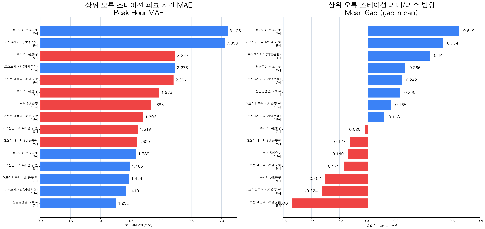
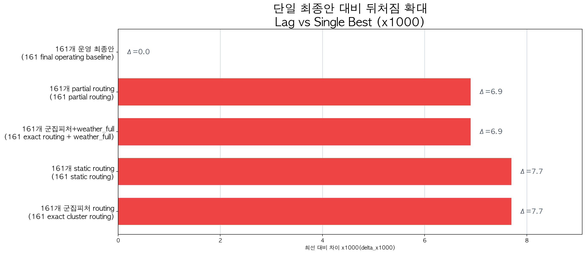
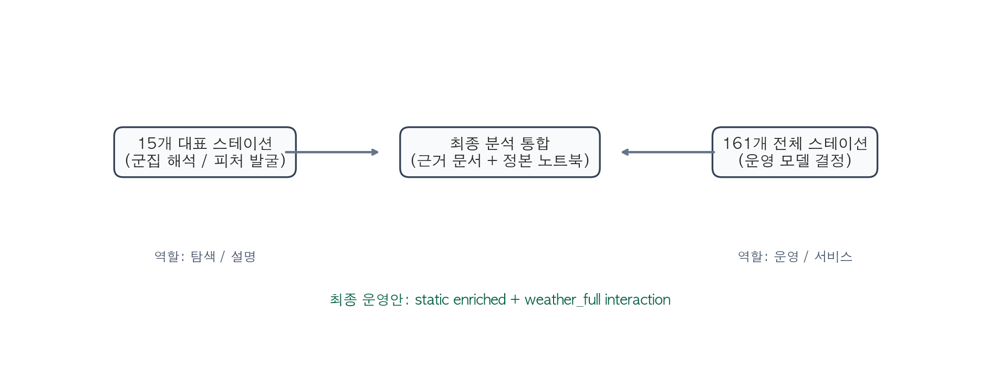

대표 15개 스테이션 실험과
강남구 전체 161개 스테이션 운영 기준선을 함께 설명| 장 | 상태 | 비고 |
|---|---|---|
| 1. 프로젝트 개요 | 작성 | |
| 2. 문제 정의 | 작성 | |
| 3. 데이터 설명 | 작성 | |
| 4. 전처리 및 피처 엔지니어링 | 작성 | |
| 5. 군집화 분석 | 작성 | |
| 6. 예측 모델 설계 | 작성 | |
| 7. 대표 15개 스테이션 실험 | 작성 | |
| 8. 강남구 전체 161개 스테이션 실험 | 작성 | |
| 9. 오류 분석 | 작성 | |
| 10. 최종 모델 및 성능 요약 | 부분 작성 | 최종 요약 문장 보강 필요 |
| 11. 서비스 적용 방안 | 준비 중 | |
| 12. 결론 및 향후 과제 | 준비 중 |
강남구군집별 대표 스테이션 15개강남구 전체 공통 스테이션 161개2023~2024 학습,
2025 테스트공간 역할을
먼저 정리했다.15개를 뽑아 군집별 피처
탐색과 모델 반응을 확인했다.161개를 기준으로 최종 모델을 선택했다.군집화 -> 대표 15개 탐색 -> 161개 운영 기준선 선택의
흐름을 하나로 묶는 정리본이다.
station-hourRMSE, MAE, R²2025 테스트 성능과 운영 안정성| 용어 | 쉬운 설명 |
|---|---|
RMSE, MAE, R² |
모델 성능을 읽는 평가 지표 |
objective (학습 목표 함수) |
모델이 무엇을 더 잘 맞추도록 학습할지 정하는 기준 |
RMSE objective |
일반 회귀형 목표 함수 |
Poisson objective |
수요량·건수 같은 count 데이터에 맞춘 목표 함수 |
subset (축소 피처 조합) |
전체 후보 피처 중 일부만 골라 만든 피처 묶음 |
baseline (기준선 모델) |
이후 개선 여부를 비교하기 위한 기본 모델 |
routing (군집 분기 적용) |
군집별로 다른 모델이나 다른 피처 조합을 태우는 방식 |
interaction (상호작용 피처) |
두 조건을 곱하거나 묶어서 함께 반응을 보게 만든 피처 |
| 구분 | 현재 해석 |
|---|---|
| 분석/ML 1차 목표 | 대여소별 시간대 수요(station-hour rental_count)
예측 |
| 탐색용 데이터셋 | 군집별 대표 스테이션 15개 |
| 운영용 데이터셋 | 강남구 전체 공통 스테이션 161개 |
| 서비스 연결 방향 | 예측 대여량을 잔여 자전거, 부족 위험,
재배치 우선순위로 후처리 |
15개는 설명과 피처 탐색용, 161개는 실제
운영 모델 선택용으로 역할을 나눠 해석한다.
| 구분 | 설명 |
|---|---|
| 대여 이력 | 서울시 따릉이 대여/반납 이력 |
| 대여소 정보 | 대여소 위치, 운영 여부 |
| 날씨 데이터 | 기온, 습도, 강수량, 풍속 등 |
| 정적 입지 피처 | 지하철 거리, 버스정류장 수, 표고, 상권/생활권 주변 정보 |
| 군집 컬럼 | 별도 군집화 분석으로 생성된 cluster |
대표 15개: 군집별 대표 스테이션 중심 탐색용 데이터전체 161개: 실제 운영 기준선 선택용 데이터2023~20242025| 구분 | 역할 |
|---|---|
대표 15개 raw_data |
군집별 피처 탐색, 축소 피처 조합 실험, 오류 해석 |
161개 full_data |
실제 운영 기준선 선택 |
정적 입지 피처 |
지하철, 버스, 표고, 상권, 생활권 구조 보강 |
군집 컬럼(cluster) |
군집화 결과를 후속 예측 실험에 연결하는 공통 키 |
is_commute_hour (출퇴근 시간 여부)is_night_hour (야간 시간 여부)is_weekend (주말 여부)is_holiday_eve (공휴일 전날 여부)precipitation (강수량)heavy_rain_flag (강한 비 여부)temperature (기온)humidity (습도)subway_distance_m (최근접 지하철 거리)bus_stop_count_300m (300m 내 버스정류장 수)station_elevation_m (대여소 표고)restaurant_count_300m (300m 내 음식점 수)cafe_count_300m (300m 내 카페 수)rain_x_commute (비 오는 출퇴근 시간대)rain_x_night (비 오는 야간 시간대)precipitation_x_commute (강수량이 있는 출퇴근
시간대)precipitation_x_night (강수량이 있는 야간 시간대)| 판단 | 이유 |
|---|---|
| 날씨만 단독으로 넣지 않음 | 비 자체보다 비 오는 출퇴근/야간 시간대 반응이 더
중요했음 |
| 정적 입지 피처를 별도 복원 | 161개 데이터만으로는 군집 차이를 충분히 설명하기
어려웠음 |
| 군집 컬럼은 해석 축으로 유지 | 최종 모델이 단일 모델이어도 군집은 오류 해석과 피처 발굴의 핵심 기준 |
정적 피처 + weather_full interaction(날씨-시간대 상호작용 피처)
조합이 가장 안정적이었다.
공간 역할 기준으로
분류5개업무/상업 혼합형아침 도착 업무 집중형주거 도착형생활·상권 혼합형외곽 주거형Top 3를 선정15개를 실험용 대표셋으로 사용z_final_delivery 기준 별도 근거 문서에서
확인 가능| 군집 | station 수 | 07~10 반납 비율 | 11~14 반납 비율 | 17~20 반납 비율 | 해석 |
|---|---|---|---|---|---|
cluster00 |
49 |
0.2832 |
0.1874 |
0.2326 |
업무/상업 혼합형 |
cluster01 |
3 |
0.4863 |
0.1599 |
0.1614 |
아침 도착 업무 집중형 |
cluster02 |
32 |
0.1134 |
0.1497 |
0.3831 |
주거 도착형 |
cluster03 |
61 |
0.1532 |
0.1975 |
0.3066 |
생활·상권 혼합형 |
cluster04 |
19 |
0.1569 |
0.1589 |
0.3123 |
외곽 주거형 |


대여소의 공간 역할을 해석하고 후속 예측 피처를 고르는 상위
기준을 만드는 단계였다.
LightGBMCatBoostRMSE objectivePoisson objective축소 피처 조합(subset) 실험LightGBM이라도 RMSE objective로 학습할지,
Poisson objective로 학습할지에 따라 결과가 달라질 수 있다.
여기서 objective는 학습 목표 함수, subset은
축소 피처 조합을 뜻한다.
대표 15개는 군집별 피처 탐색과 해석에 집중전체 161개는 실제 운영 기준선 선택에 집중| 축 | 대표 15개 | 전체 161개 |
|---|---|---|
| 목적 | 군집별 피처 탐색 | 실제 운영 기준선 선택 |
| 질문 | 어떤 군집이 어떤 피처에 반응하는가 | 전체 강남구에서 어떤 조합이 가장 안정적인가 |
| 결과 해석 | 군집별 권장안과 설명 근거 | 운영 모델 최종 선택 |
| 용어 | 쉬운 설명 | 핵심 포함 피처 |
|---|---|---|
rep15_static_base |
대표 15개 전체에 공통으로 적용한 정적 피처 기준선 모델 | 시간 피처, 날씨 기본 피처, 정적 입지 피처 |
rep15_static_weather_full |
대표 15개 전체에 정적 피처 + 날씨-시간대 상호작용 피처를 같이 넣은 비교안 | rep15_static_base + rain_x_commute,
rain_x_night, precipitation_x_lunch 등 |
subset_a_commute_transit + LightGBM_Poisson |
cluster01 출퇴근-교통 중심 경량 조합 + Poisson 기준
LightGBM |
is_commute_hour, commute_morning_flag,
commute_evening_flag, subway_distance_m,
bus_stop_count_300m |
subset_d_current_compact_best + LightGBM_Poisson |
cluster02에서 가장 성능이 좋았던 경량 조합 + Poisson
기준 LightGBM |
is_night_hour, is_weekend,
is_holiday_eve, heavy_rain_flag,
station_elevation_m, bus_stop_count_300m |
static enriched |
전체 161개 데이터에 정적 입지 피처를 복원해 붙인 단일 모델 | 시간 피처, 날씨 기본 피처, 정적 입지 피처 |
cluster-aware static gating |
군집별로 더 의미 있는 정적 피처만 강조해서 넣은 단일 모델 | 정적 입지 피처 + 군집별 gated 정적 피처 |
partial routing |
군집별로 일부 설정만 나눠 적용한 초기 군집 분기 적용 비교안 | 군집별 학습 설정 일부 분기, 일부 시간/날씨 파생 피처 |
exact cluster routing |
대표 15개에서 찾은 군집별 피처 조합을 161개 전체에 그대로 옮긴 군집 분기 적용 비교안 | 군집별 권장 피처 조합 |
exact routing + weather_full |
대표 15개 군집 피처에 weather_full까지 함께 붙인 군집
분기 적용 비교안 |
군집별 권장 피처 + weather_full 상호작용 피처 |
weather_full |
비/강수량과 출퇴근·점심·야간 시간대를 함께 묶은 전체 상호작용 피처 조합 | rain_x_commute, rain_x_morning_commute,
rain_x_evening_commute, rain_x_night,
rain_x_lunch, precipitation_x_commute,
precipitation_x_night,
precipitation_x_lunch |
weather_time_band_core |
시간대 중심 핵심 상호작용 조합 | rain_x_night, rain_x_lunch,
precipitation_x_night, precipitation_x_lunch
중심 |
weather_commute_core |
출퇴근 시간대 중심 핵심 상호작용 조합 | rain_x_commute, rain_x_morning_commute,
rain_x_evening_commute,
precipitation_x_commute 중심 |
weather_precip_intensity_core |
강수 강도 중심 핵심 상호작용 조합 | heavy_rain_x_commute, heavy_rain_x_night,
precipitation_x_commute, precipitation_x_night
중심 |
학습 목표 함수(objective)가
잘 맞는지 확인cluster01:
출퇴근+교통 축소 피처 조합(subset_a_commute_transit) + LightGBM_Poisson,
test RMSE 1.3108cluster02:
현재 최적 축소 피처 조합(current_compact_best) + LightGBM_Poisson,
test RMSE 0.7990해석 근거 강화 수준으로 본다cluster01은 출근 피크와 교통 접근성이 핵심cluster02는 야간/주말/공휴일전날과 주거형 특성이
핵심| 구분 | 모델 | 테스트 RMSE | 해석 |
|---|---|---|---|
cluster02 |
subset_d_current_compact_best + LightGBM_Poisson |
0.7990 |
대표 15개 내 최선 |
대표 15개 기본안 |
rep15_static_base |
0.9196 |
전체 대표셋 baseline(기준선 모델) |
대표 15개 weather_full |
rep15_static_weather_full |
0.9198 |
weather_full 상호작용 피처는 대표셋에서 이득 없음 |
cluster01 |
subset_a_commute_transit + LightGBM_Poisson |
1.3108 |
가장 어려운 군집이지만 개선 여지 큼 |
최선 대비 차이만
확대해 보여준다.
군집별 최종 운영 모델 확정이
아니라, 군집별로 유효한 피처 축을 발굴했다는 데 있다.
161 original baseline(기준선 모델):
0.8624161 static enriched: 0.8620161 cluster-aware gating: 0.8615161 static + weather_full interaction(상호작용 피처):
0.8604, 현재 최선161 routing(군집 분기 적용) 계열:
0.8673 ~ 0.8681, 테스트 기준 악화단일 모델 + 정적 피처 + weather_full interaction(상호작용 피처)routing(군집 분기 적용)은 검증셋 일부 개선이 있었지만
테스트셋에서 일반화 실패| 비교안 | 테스트 RMSE | 최선 대비 차이 x1000 | 해석 |
|---|---|---|---|
static enriched + weather_full interaction |
0.8604 |
0.0 |
현재 최선 운영안 |
cluster-aware static gating |
0.8615 |
1.1 |
소폭 개선이 있었지만 최선은 아님 |
static enriched single model |
0.8620 |
1.6 |
정적 피처 복원 효과 확인 |
original baseline |
0.8624 |
2.0 |
원본 기준선 모델 |
partial routing |
0.8673 |
6.9 |
routing 일반화 실패 |
exact routing + weather_full |
0.8673 |
6.9 |
weather_full 상호작용 피처도 routing을 살리지 못함 |
static routing |
0.8681 |
7.7 |
routing 계열 중 하위권 |
exact cluster routing |
0.8681 |
7.7 |
15개 군집 피처가 161개에 그대로 일반화되지 않음 |
최선 대비 차이만 확대해서
보여준다.
static enriched + weather_full interaction(상호작용 피처)으로
고정한다.
저녁 피크에서 과대/과소
예측이 크게 발생아침 피크 또는 출근/귀가 전환 시간대에서
오차 집중 현상 확인날씨 x 시간대 interaction(상호작용 피처)이 더 유효했음| 비교안 | 테스트 RMSE | 최선 대비 차이 x1000 | 해석 |
|---|---|---|---|
weather_full |
0.8604 |
0.0 |
현재 최선 |
weather_time_band_core |
0.8616 |
1.2 |
시간대 축소안 |
weather_commute_core |
0.8617 |
1.3 |
출퇴근 축소안 |
weather_precip_intensity_core |
0.8620 |
1.6 |
강수 강도 축소안 |
static_enriched_base |
0.8620 |
1.6 |
정적 피처 기준선 |
weather_full_weight_simple |
0.8609 |
0.5 |
단순 가중치 |
weather_full_weight_monthly |
0.8605 |
0.1 |
월별 가중치 |


| 관찰 | 판단 |
|---|---|
| 상위 오류는 저녁 피크와 아침 피크에 집중 | 시간대 interaction을 강화할 필요가 있었음 |
| weather weighting(가중치)은 추가 개선이 거의 없음 | 단순 가중치보다 interaction(상호작용 피처)이 더 유효 |
| routing 계열은 테스트에서 일관되게 악화 | 운영 기준은 단일 모델로 고정 |
LightGBM강남구 전체 161개static enriched + weather_full interaction(상호작용 피처)0.8604| 항목 | 내용 |
|---|---|
| 최종 선택 이유 | 강남구 전체 161개 기준 테스트 성능이 가장 안정적 |
| 입력 축 | 시간 파생 피처 + 날씨 피처 + 정적 입지 피처 + weather interaction(상호작용 피처) |
| 배제한 대안 | routing(군집 분기 적용) 계열, weighting(가중치) 계열 |
| 운영 해석 | 15개는 설명용, 161개는 운영용 |
161개 단일 모델이 더
안정적이었다.static enriched + weather_full interaction(상호작용 피처)이었다.| 비교안 | 테스트 RMSE | 최선 대비 차이 x1000 | 해석 |
|---|---|---|---|
161 final operating baseline |
0.8604 |
0.0 |
최종 운영안 |
161 partial routing |
0.8673 |
6.9 |
validation 개선, test 악화 |
161 exact routing + weather_full |
0.8673 |
6.9 |
weather_full을 붙여도 회복 실패 |
161 static routing |
0.8681 |
7.7 |
static enriched routing도 열세 |
161 exact cluster routing |
0.8681 |
7.7 |
15개 군집 피처 일반화 실패 |


서비스 출력 컬럼과 후처리 규칙이 확정되면 운영
카드 형식으로 한 번 더 압축한다.
predicted_remaining_bikes, stock_gap,
risk_score 정의